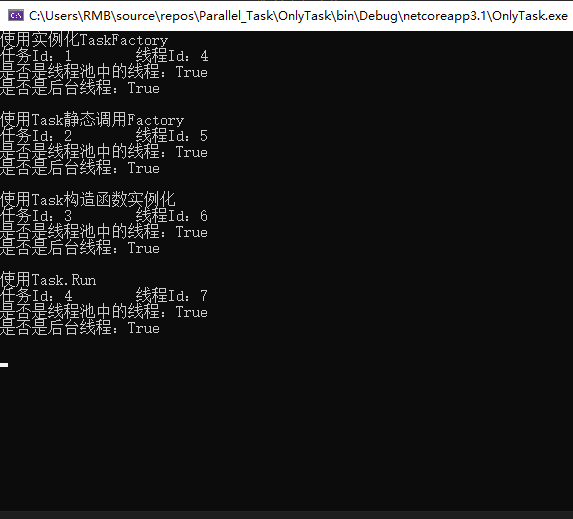
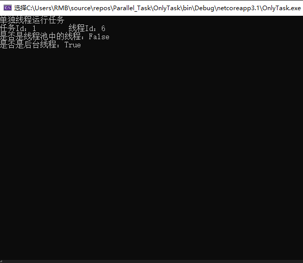
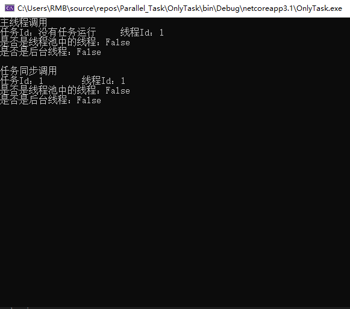
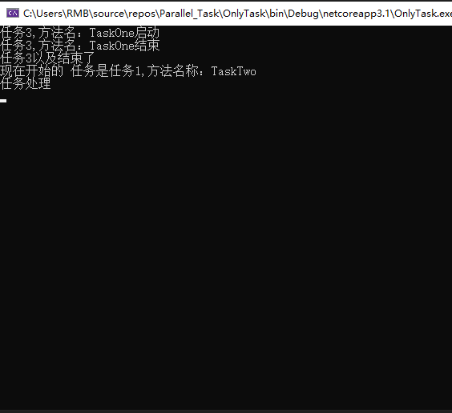
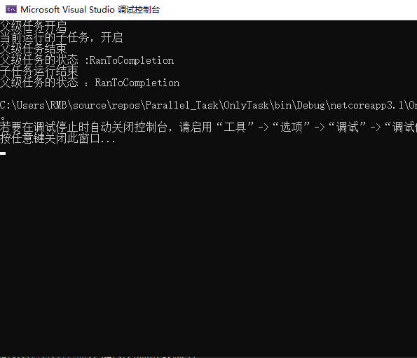
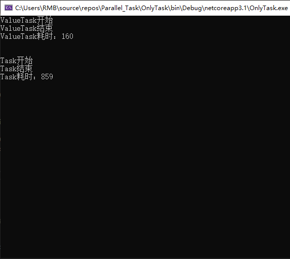

上一篇我们主要介绍了并行编程相关的知识，这一节我们继续介绍关于任务相关的知识。为了更好的控制并行操作，我们可以使用System.Threading.Tasks中的Task类。我们首先来了解是什么是任务——任务表示将要完成的一个或某个工作单元，这个工作单元可以在单独线程中运行，也可以使用同步方式启动运行（需要等待主线程调用）。为什么使用任务呢？——任务不仅可以获得一个抽象层（将要完成的工作单元）、还可以对底层的线程运行进行更好更多的控制（任务的运行）。
我们讲到使用任务可以更好更多的控制底层的线程。就涉及到——线程池，线程池提供的是一个后台线程的池。线程池独自管理线程、根据需求增加或减少线程数。使用完成的线程返回至线程池中。我们下面就看看创建任务：
我们看下创建任务的几种方式：
1、使用实例化的TaskFactory类，然后使用其StartNew方法启动任务。
2、使用Task静态的Factory以来访问TaskFactory，然后调用StartNew方法启动任务。与第一种相似，但是对工厂的创建的控制就没那么全面。
3、使用Task的构造函数，实例化Task对象来指定创建任务，然后通过Start（）方法进行启动任务。
4、使用Task.Run方法来立即启动任务。
我们看下以上方法创建的任务有何区别和相同吧，看代码：
private static object _lock = new object();
public static void TaskMethond(object item)
{
lock (_lock)
{
Console.WriteLine(item?.ToString());
Console.WriteLine($"任务Id：{Task.CurrentId?.ToString() ?? "没有任务运行"}\t 线程Id：{Thread.CurrentThread.ManagedThreadId}");
Console.WriteLine($"是否是线程池中的线程：{Thread.CurrentThread.IsThreadPoolThread}");
Console.WriteLine($"是否是后台线程：{Thread.CurrentThread.IsBackground}");
Console.WriteLine();
}
}
#region 任务创建
public static void TaskCreateRun()
{
var taskFactory = new TaskFactory();
var task1 = taskFactory.StartNew(TaskMethond, "使用实例化TaskFactory");
var task2 = Task.Factory.StartNew(TaskMethond, "使用Task静态调用Factory");
var task3 = new Task(TaskMethond, "使用Task构造函数实例化");
task3.Start();
var task4 = Task.Run(() => TaskMethond("使用Task.Run"));
}
#endregion
我们看代码运行的结果，发现不管使用的那种方法创建任务，都是使用过的线程池中的线程。
任务当然也不一定就是使用线程池中的线程运行的，也是可以使用其他线程的。如果任务的将长时间运行的话，我们尽可能的考虑使用单独线程运行（TaskCreationOptions.LongRunning），这个情况下线程就不由线程池管理。我们看下不使用线程池中线程运行，使用单独线程运行的任务。
#region 单独线程运行任务
public static void OnlyThreadRun()
{
var task1 = new Task(TaskMethond, "单独线程运行任务", TaskCreationOptions.LongRunning);
task1.Start();
}
#endregion
我们看其运行结果，依旧是后台线程，但是不是使用的线程池中的线程。
同时任务也可以同步运行，以相同的线程作为调用线程，下面我们看下使用Task类中的RunSynchronoushly方法实现同步运行。
#region 同步任务
public static void TaskRunSynchronoushly()
{
TaskMethond("主线程调用");
var task1 = new Task(TaskMethond, "任务同步调用");
task1.RunSynchronously();
}
#endregion

我们看运行结果，发现首先调用TaskMethond方法时候没有任务并且使用的线程1，再我们创建Task实例运行TaskMethond方法的时候，任务id是1，但是线程我们依然使用的是主线程1。
在任务中，我们可以指定在某个任务完成后，应该马上开始另外一个任务。好比一个任务完成之后应该继续其处理。但是失败后我们应该进行一些处理工作。
我们可以使用ContinueWith()方法来定义使用连续任务，表示某任务之后应该开始其他任务，我们也可以指定任务成功后开始某个任务或者失败后开启某个任务（TaskContinuationOptions）。
#region 连续任务
public static void TaskOne()
{
Console.WriteLine($"任务{Task.CurrentId},方法名：{System.Reflection.MethodBase.GetCurrentMethod().Name }启动");
Task.Delay(1000).Wait();
Console.WriteLine($"任务{Task.CurrentId},方法名：{System.Reflection.MethodBase.GetCurrentMethod().Name }结束");
}
public static void TaskTwo(Task task)
{
Console.WriteLine($"任务{task.Id}以及结束了");
Console.WriteLine($"现在开始的 任务是任务{Task.CurrentId},方法名称：{System.Reflection.MethodBase.GetCurrentMethod().Name } ");
Console.WriteLine($"任务处理");
Task.Delay(1000).Wait();
}
public static void TaskThree(Task task)
{
Console.WriteLine($"任务{task.Id}以及结束了");
Console.WriteLine($"现在开始的 任务是任务{Task.CurrentId}.方法名称：{System.Reflection.MethodBase.GetCurrentMethod().Name } ");
Console.WriteLine($"任务处理");
Task.Delay(1000).Wait();
}
public static void ContinueTask()
{
Task task1 = new Task(TaskOne);
Task task2 = task1.ContinueWith(TaskTwo, TaskContinuationOptions.OnlyOnRanToCompletion);//已完成情况下继续任务
Task task3 = task1.ContinueWith(TaskThree, TaskContinuationOptions.OnlyOnFaulted);//出现未处理异常情况下继续任务
task1.Start();
}
#endregion
我们看代码中写的是先开始运行TaskOne()，然后当任务完成后运行TaskTwo(Task task) ,如果任务失败的话机会运行TaskThree(Task task)。我们看运行结果中是运行了TaskOne()然后成功后运行了TaskTwo(Task task)，避开了TaskThree(Task task)的运行，所以我们是可以通过ContinueWith来进行连续任务和TaskContinuationOptions进行控制任务运行的。
这里我们利用任务的连续性，我就就可以实现在一个任务结束后立即开启另一个任务，任务也可以构成一个层次结构。就比如一个任务中启动了一个任务，这样的情况就形成了父子层次的结构。下面我们看的案例就是这么一个案例。
#region 任务的层次结构——父子层次结构
public static void ChildTask()
{
Console.WriteLine("当前运行的子任务，开启");
Task.Delay(5000).Wait();
Console.WriteLine("子任务运行结束");
}
public static void ParentTask()
{
Console.WriteLine("父级任务开启");
var child = new Task(ChildTask);
child.Start();
Task.Delay(1000).Wait();
Console.WriteLine("父级任务结束");
}
public static void ParentAndChildTask()
{
var parent = new Task(ParentTask);
parent.Start();
Task.Delay(2000).Wait();
Console.WriteLine($"父级任务的状态 :{parent.Status}");
Task.Delay(4000).Wait();
Console.WriteLine($"父级任务的状态 ：{parent.Status}");
}
#endregion

在前面问介绍的.Net异步编程中我们讲到了WhenAll，用于处理多个异步方法。在这里我们继续扩展点，WhenAll()和WaitAll()，都是等待传递给他们的任务完成。但是WaitAll()方法阻塞调用任务，知道所有任务完成为止，而WhenAll()返回了一个任务，从而可以使用async关键在等待结果。不会阻塞任务。与之相对应的也还有WaitAny()和WhenAn()。等待任务还有我们一直都用到了的Task.Delay()方法，指定这个方法放回的任务前要等待的毫秒数。
下面我们看这个ValueTask等待类型（结构），相对于Task类来说，ValueTask没有堆中对象的开销。在一般情况下，Task类型的开销可以被忽略掉，但是在一些特殊情况下，例如方法被调用千次万次来看。这种情况ValueTask就变得很适用了。我们看下面这个案例，使用ValueTask时，在五秒内的情况下直接从它的构造函数返回值。如果时间不在五秒内的话就使用真正获取数据的方法。然后我们与使用Task的方法进行对比。这里我们采取十万条数据的测试对比。
#region 等待任务
private static DateTime _time;
private static List<string> _data;
public static async ValueTask<List<string>> GetStringDicAsync()
{
if (_time >= DateTime.Now.AddSeconds(-5))
{
return await new ValueTask<List<string>>(_data);
}
else
{
(_data, _time) = await GetData();
return _data;
}
}
public static Task<(List<string> data, DateTime time)> GetData() =>
Task.FromResult(
(Enumerable.Range(0, 10).Select(x => $"itemString{x}").ToList(), DateTime.Now));
public static async Task<List<string>> GetStringList()
{
(_data, _time) = await GetData();
return _data;
}
#endregion static async Task Main(string[] args)
{
Stopwatch stopwatch = new Stopwatch();
stopwatch.Start();
Console.WriteLine("ValueTask开始");
for (int i = 0; i < 100000; i++)
{
var itemList= await GetStringDicAsync();
}
Console.WriteLine("ValueTask结束");
Console.WriteLine($"ValueTask耗时：{stopwatch.ElapsedMilliseconds}");
Console.WriteLine();
Console.WriteLine();
stopwatch.Restart();
Console.WriteLine("Task开始");
for (int i = 0; i < 100000; i++)
{
var itemList = await GetStringList();
}
Console.WriteLine("Task结束");
Console.WriteLine($"Task耗时：{stopwatch.ElapsedMilliseconds}");
Console.ReadLine();
}
我们看其运行结果，使用Task和ValueTask的运行结果耗时相差是巨大的。所以在一些特殊情况下使用ValueTask或许会更加的适用。
今天我们介绍了关于任务相关的一些知识概念。我们结合上一篇文章我们来梳理一些任务、线程、多线程、异步、同步、并发、并行任务之间的联系与关系吧。
首先我们看我们这章节学习的任务、任务是一个将要完成的工作单元，那么由谁完成呢？由线程来运行这个任务。那么关于多线程呢？多线程应该可以说是一个设计概念，用来实现线程切换的。多线程就可以运行多个任务，但是在并发中。在同一时间内只能有一个程序运行。只不过线程间切换速度极快，让它看起来似乎是在同一时间运行了多个程序。其实在微观上讲，并发在任意时间点只有一个程序在运行，只不过是线程切换速度快。那么怎么达到切换速度极快呢？这就需要异步了。在线程运行的时候不需要等到它完成结果再去继续其他的线程任务。也就是可等待的。实现A运行起来不等待其结果，然后切换到B继续运行。这样切换速度就极快了。我们再仔细看多线程切换线程似乎成了实现异步的一种方法手段了。有异步就有同步，同步来说就不需要使用到多线程了，没必要。反正等到上一个任务运行完成。就继续使用上一个线程继续运行。这里都是讲的并发中的情况。那么并行呢？并行可以说不管在微观还是宏观上都是可以实现一个时间运行多个程序的。并发是多个程序运行在一个处理机上，但是并行任务是运行在多个处理机上。例如实现四个任务并行，那么我们至少需要四个逻辑处理内核的配合才能到达。
世界上那些最容易的事情中，拖延时间最不费力。坚韧是成功的一大要素，只要在门上敲得够久够大声，终会把人唤醒的。
欢迎大家扫描下方二维码，和我一起学习更多的知识😊